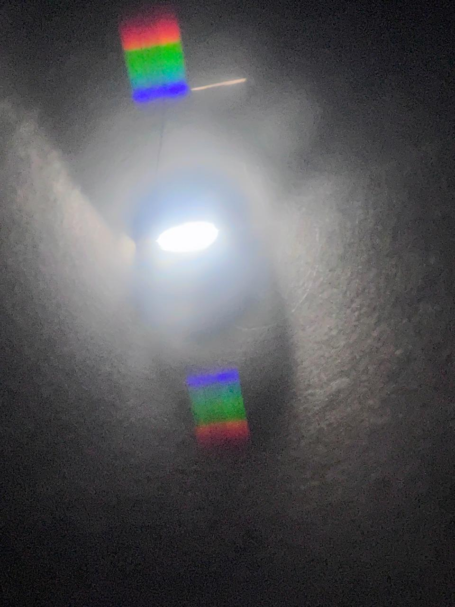

Experiment Analytics
Welcome to the Experiment Analytics page! Here, you can analyze data, view charts, and get insights into various experiments conducted by S.P - NASA.
Spectroscopy: Understanding Light and Its Elements
Spectroscopy is a powerful tool that splits light into different colors. Each color corresponds to a different element—like how sodium gives off a yellow light. Scientists use this to study the atmospheres of distant planets and analyze the chemical compositions of stars and galaxies.
Experiment Instructions
1. Fold the cardboard sheet into a tube.
2. Place the lens at one end.
3. Insert the cardboard circle with a slit on the other end.
4. Point the spectroscope at different light sources and observe the light spectrum!
The Doppler Effect: Detecting Planetary Movements
The Doppler Effect is how light or sound changes when something moves toward or away from us. This shift in waves helps scientists measure the speed and direction of planets around distant stars!
Experiment Instructions
1. Turn on the buzzer inside the ball.
2. Play catch with the ball and notice how the sound changes.
3. As the ball moves closer, the sound pitch gets higher. As it moves away, the pitch lowers.
4. This simulates how sound waves compress and stretch, just like how light waves behave in space.
Explore More: Analysis of Doppler Effect and Spectroscopy
Doppler Effect Analysis: The Doppler Effect allows scientists to analyze the motion of stars and planets. When a star moves toward us, its light shifts to a shorter wavelength (blue shift), and when it moves away, its light shifts to a longer wavelength (red shift). By measuring these shifts, scientists can determine whether a star is moving toward or away from Earth, and at what speed. This information is critical for understanding the orbital paths of planets and the expansion of the universe.
In our experiments, the Doppler Effect was used to demonstrate how sound waves compress and expand. This effect, when applied to light waves, allows astronomers to detect even the smallest changes in the velocity of celestial objects, providing clues about potential exoplanets or binary star systems.
Spectroscopy Analysis: Spectroscopy is fundamental in determining the chemical composition of stars and planetary atmospheres. By analyzing the unique spectrum of light emitted or absorbed by different elements, scientists can identify the presence of specific chemicals like hydrogen, helium, and carbon. This technique has helped in discovering the existence of water vapor on distant planets, determining the age of stars, and understanding the life cycles of galaxies.
Our spectroscopy experiment demonstrated how light from various sources is split into different colors, providing a clear visual of how scientists detect and identify elements in space. This process, combined with data analysis, has allowed us to map the chemical makeup of not only stars but also interstellar gas clouds and other cosmic phenomena.